Kamil
Zigen
delivered (portfolio case studies)
70% → 95%
CNC pilot systems
Automotive Tier 1
Project Index
Executive Summary
Manufacturing transformation leader with 15 years across automotive Tier 1, CNC system integration, and precision machining operations. I find what is actually costing money, build the case to fix it, and make the fix stick. My dual expertise — CNC process engineering combined with Lean Six Sigma Black Belt execution — produces faster diagnosis and more durable results than either discipline alone.
- Rising production costs, no clear driver → data-driven cost analysis and process redesign
- Recurring quality failures despite containment → structured RCA to eliminate the real root cause
- Delivery performance below target → KPI-driven planning systems and cross-functional execution discipline
- Capital investment needs validation → investment-ready concepts with time studies and financial models
- Machine degradation driving scrap → diagnostic evidence plus ROI business case to secure the budget
- Setup errors recurring on critical parts → PLC-level error-proofing, not procedural controls
cost savings
Gundrill P1
from 70.3% baseline
concepts delivered
at FAT commissioning
Why Companies
Hire Me
The common thread: the problem was known, but the data to justify solving it did not exist. My role is to generate that data, build the business case, and lead the organisation through the change.
Gundrill Reconditioning
Program
Pareto analysis confirmed Gundrill as the dominant cost driver: €629K / year — ahead of inserts (€497K), carbide milling (€413K), and drills (€276K).
Cost baseline
Pareto analysis
DoE geometry
Reconditioning
SPC + PFMEA
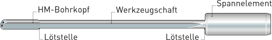
TBT · 7-cycle limit
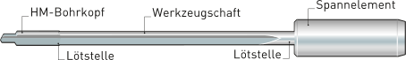
TBT · highest cost item
ACTION: Jan 2021 reconditioning programme start
RESULT: Peak: €95,251 (Dec '20) → sustained <€35K
- In-house carbide tip cutback and resharpening at defined geometry parameters
- DoE confirmed 21-cycle life limit and optimal regrind depth
- SPC charts introduced — post-regrind dimensional stability monitoring
- PFMEA re-approved — quality risk unchanged across 21-cycle life
- Supplier dependency removed; internal capability built for the first time
documented & sustained
7 cycles → 21 cycles
maintained post-regrind
after implementation
Tooling Consolidation
& Complaint Risk Elimination
- Unpredictable 3-flute drill breakage — up to 12 units/week on LP Pipe components
- Monthly drilling cost ~€5,000; each breakage a potential quality escape
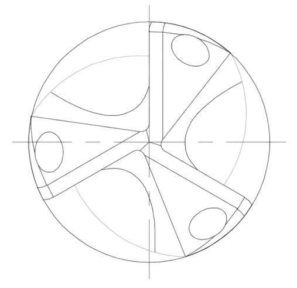
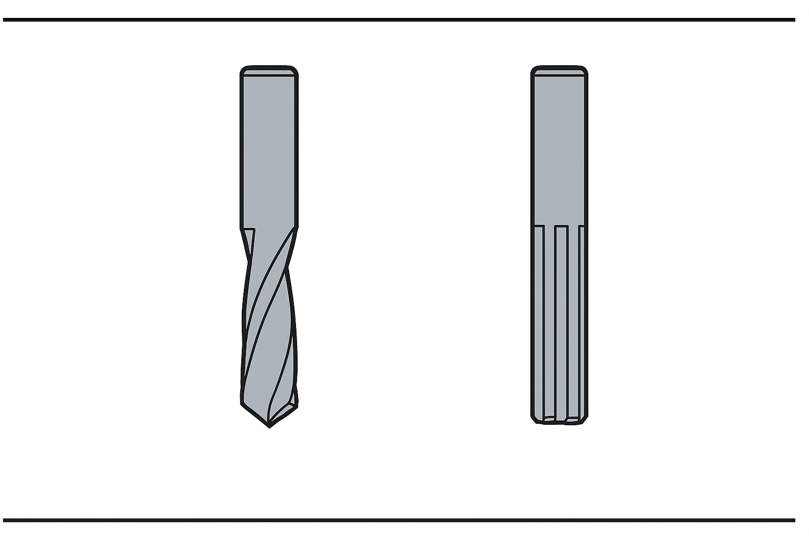
- RCA: 3-flute geometry fundamentally mismatched to material and feed conditions
- A3 problem-solving mapped failure mode; PFMEA updated
- 2-flute drill qualified via dimensional study and SPC validation
- Control plan updated; tooling standard locked
Rail Milling Insert
Optimisation · LNMX → LNHU
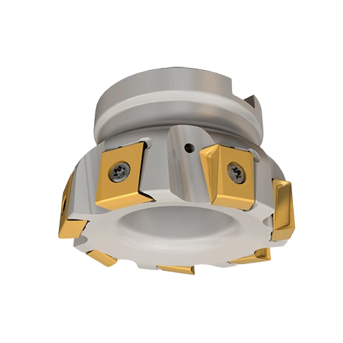
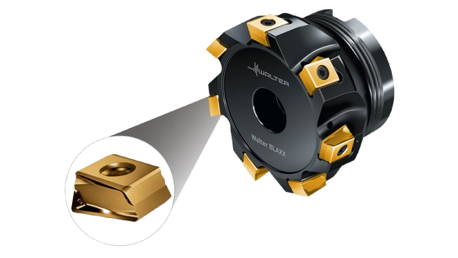
- LNMX inserts were the top consumable cost driver; premature replacement caused instability and unplanned downtime
- Collaborated with Walter to identify process-matched LNHU geometry — DMAIC + Kaizen, validated via capability study and 3-month SPC monitoring
PLC-Based Poka-Yoke
— Audi V6 HPS
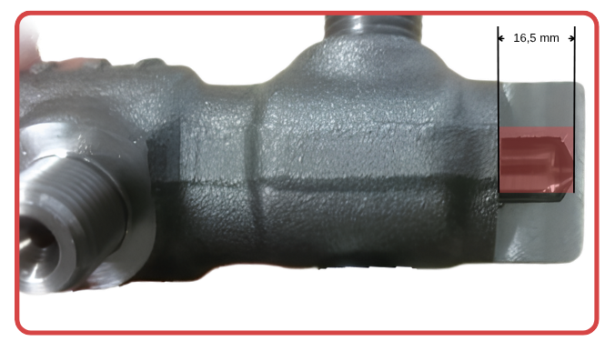
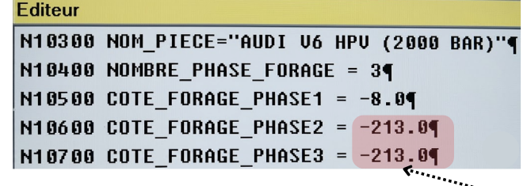
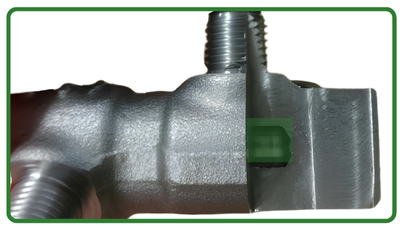
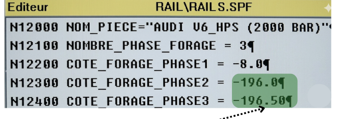
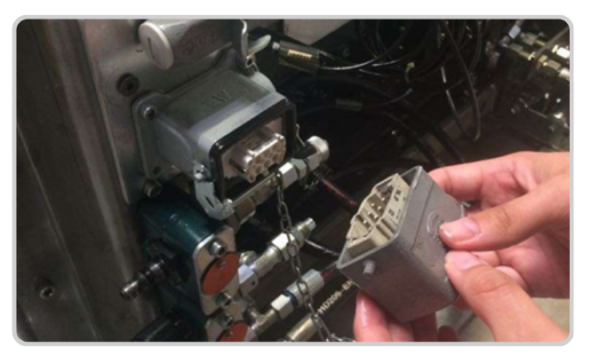
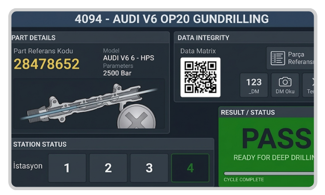
- Fixture socket interface: physical connector reads part type automatically at load — no operator input required
- 3-way PLC validation: part reference → CNC program → gage must all match before cycle start is authorised
- Machine interlock: any mismatch locks machine; supervisor acknowledgement required to clear
- No bypass: validation sequence cannot be overridden by operator action under any circumstance
- PFMEA closure: occurrence and detection ratings both reduced to minimum level
- PPAP closed — updated control plan validated and approved
"The only way to guarantee zero recurrence was to make a wrong setup physically impossible to execute. That required a system solution, not a procedural one."
or gage mismatch
automated at PLC level
closed to minimum
not procedural containment
On-Time Delivery Recovery
70.3% → 94.8%
- Procurement delays not visible to production until after production start date
- Scheduling with no buffer — demand variation translated directly to delivery misses
- No cross-functional escalation trigger before the due date was missed
- Proactive dashboard: at-risk orders flagged ≥5 working days before due date, visible to all functions simultaneously
- Daily 15-min stand-up: cross-functional review with defined escalation
- Buffer management: scheduling absorbs demand variation before it becomes a miss
- Supplier early warning: material delays trigger rescheduling, not expediting
- Quality review cadence established — daily shopfloor reviews and RCA routines embedded
Jan – Jun 2022
Jul 2022 – Feb 2023
"The plant did not need more people or more capacity. It needed to know about problems five days earlier."
H2 2022 – Feb 2023
70.3% baseline
from project start
to achieve recovery
Manufacturing Investment Strategy
— 25 Turnkey CNC Concepts
- Time study: cycle analysis, machine utilisation, takt validation
- Process design: machining sequence, fixturing, tool selection
- Financial model: equipment, tooling, runtime cost, payback
- Supplier validation: cost confirmed before customer presentation
- FMEA-based risk review integrated into concept package
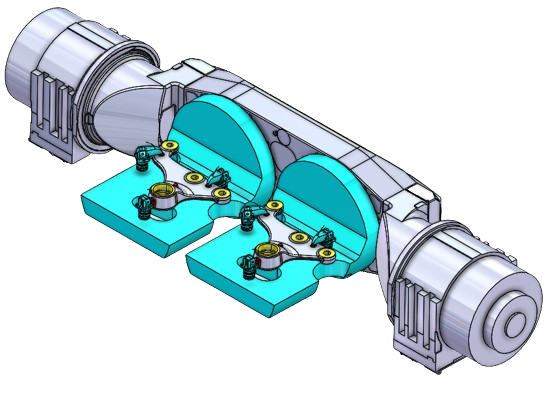
designed & delivered
pilot commissioning
at Factory Acceptance Test
2023–2025 · 100% complete
Machine Reliability
& Quality Cost Reduction
- Chronic scrap/rework, no root cause found via standard inspection
- Ball-Bar testing found geometric degradation — circularity 32.1 μm
- Replacement investment faced active resistance: "machine is running, cost is not justified"
- Reversal spikes, backlash & squareness error confirmed in the plot; 6 months of quality cost data correlated — ROI payback <4 months, making the case unanswerable
- Ball-Bar report presented to management as quantified evidence — circularity 32.1 μm exceeding process tolerance
- ROI business case built: quality cost vs. replacement cost; payback <4 months
- Ball screw replacement approved and executed
- Post-replacement Ball-Bar confirmed circularity improved to 25.4 μm
- PM schedules updated to monitor and maintain the new stable state
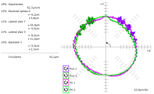
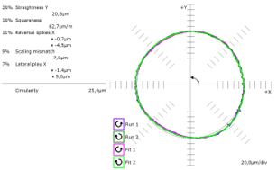
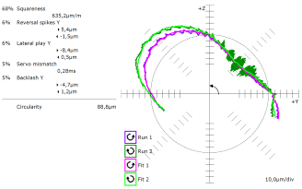
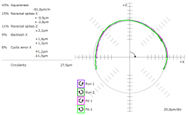
Before
After
reduction
"The Ball-Bar report became the business case. Data overcame the resistance that authority alone could not."